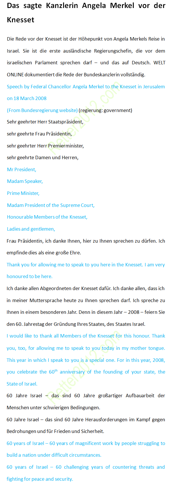

返回主页
挑战原文：默克尔演讲录音（1）

默克尔在以色列国会演讲（德语全文）来之不易。所谓打破铁鞋无觅处，得来全不费功夫。
Retter2012 团队一直在寻找Merkel的德语素材。以色列国会演讲不但有德语-英语全文，而且有MP3录音。真乃天赐良机！
这次演讲极为重要，集历史、政治及语言的大成。如果要背诵，就选择这篇。
德国何以获得以色列信任
End the Slavery Blame-Game
魔戒的“大一统”铭文（英德）
Kissinger: How the Ukraine crisis ends
德语名言：政治经济（1）
德语名言：激励奋斗（1）
德语名言：哲学智慧（1）
version:1.0; jobnet@188.com © retter2012.com